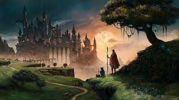

Jizard from the Bronx. It is magical to him because of all the things he can do to his home. To solve problems and make it a better place. He has seen it at his worst and at its best.
The city is very noisy. Everyday in the Bronx you head sirens, horns honkings, kids playing, and high school and intermediate football games taking place.
